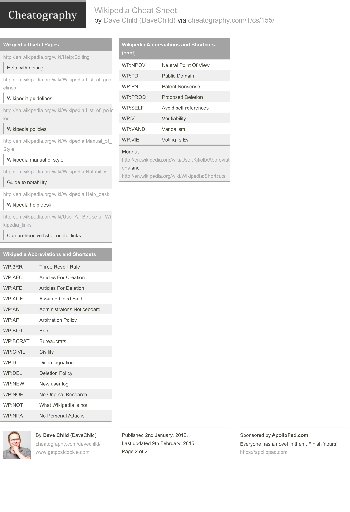
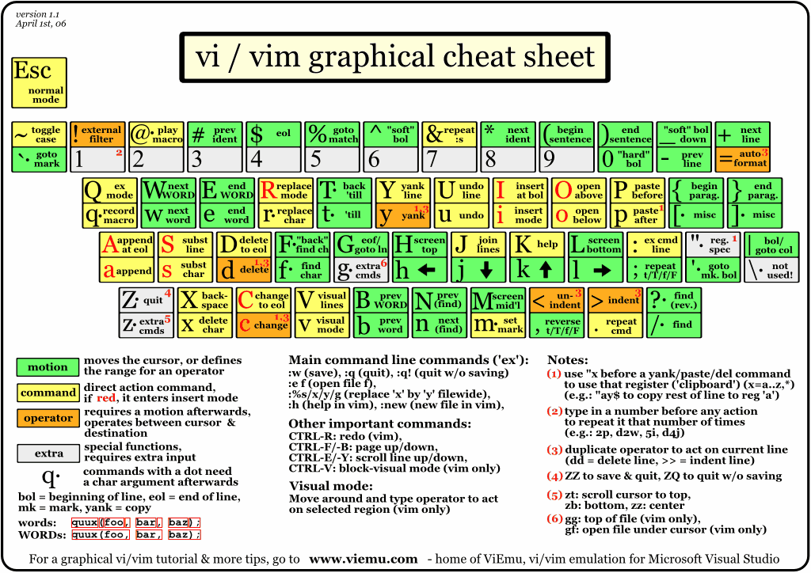
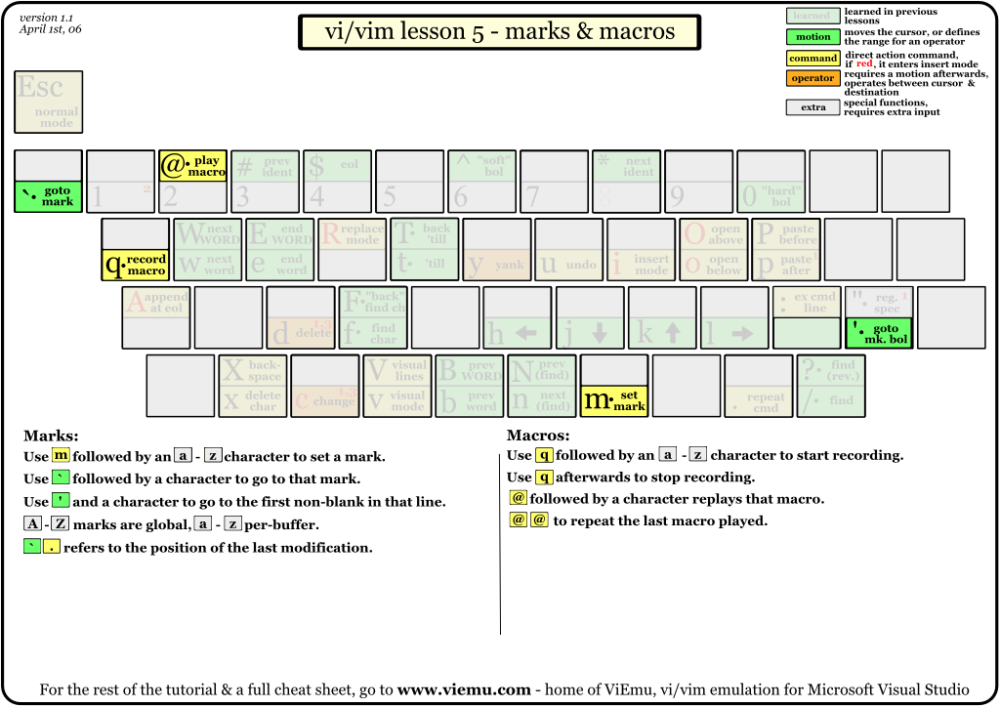
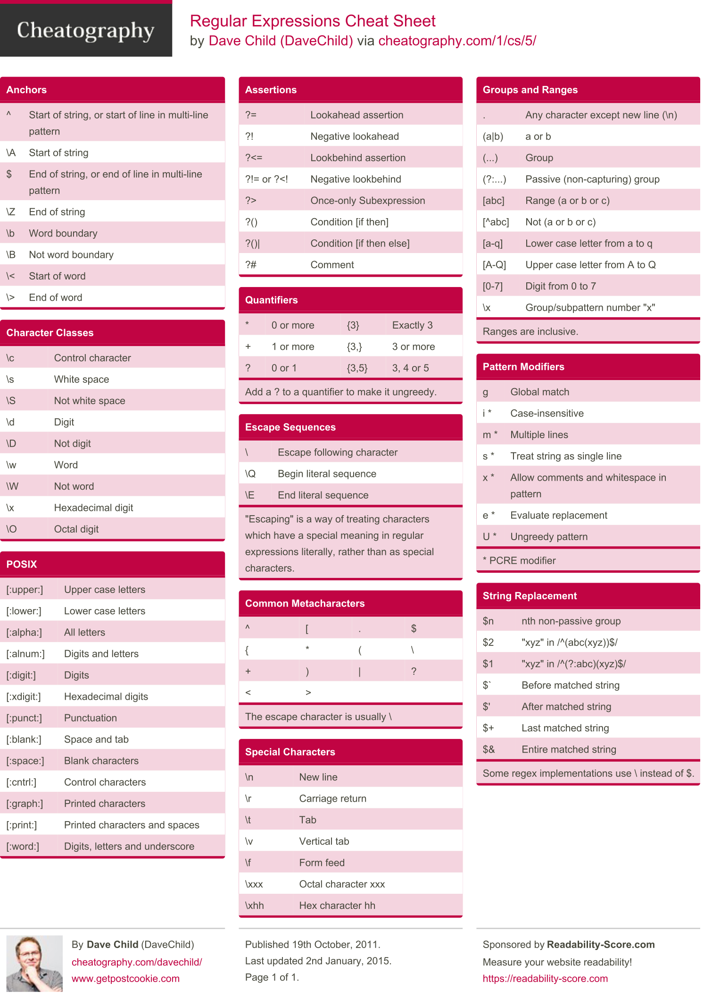

Foreword
Cheat sheets.
Markdown¶

Git¶
Principal commands¶
git init: creates a new Git repository.git status: inspects the contents of the working directory and staging area.git add <filename_1> <filename_2>: adds files from the working directory to the staging area.git add .,git add --all.git diff <filename_1> <filename_2>: shows the difference between the working directory and the staging area.git commit -m "<comments>": permanently stores file changes from the staging area in the repository.git log: shows a lis t of all previous commits.git show HEAD: show the most recent commit.git checkout HEAD <filename_1> <filename_2>: discards changes in the working directory.git checkout <filename_1> <filename_2>: idem.git reset HEAD <filename_1> <filename_2>: unstages file changes in the staging area, restore the file in your working directory.git reset <SHA> (7 characters): can be used to reset to a previous commit in your commit history.git branch: lists all a Git project’s branches.git branch <branch_name>: creates a new branch.git checkout <branch_name>: used to switch from one branch to another (the branch_name).git merge <branch_name>: used to join file changes from one branch to another (your in branch A, you merge branch_name with A).git branch -d <branch_name>: deletes the branch specified.git clone <remote_location> <clone_name>: creates a local copy of a remote.git remote -v: lists a Git project’s remotes.git fetch: fetches work from the remote into the local copy (no merging).git merge origin/master: Merges origin/master into your local branch.git push origin <branch_name>: pushes a local branch to the origin remote.


Wikipedia¶


LaTeX¶
- LaTeX Quick Reference. PDF only. TODO
- LaTeX Font Packages. PDF only.
- LaTeX Cheat Sheet.


Vi/Vim¶






VIM¶
- VIM.


Regex¶
